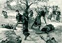

|
|
|
1 Chronicles 10
|
|
| 10:1
Now the Philistines fought against Israel; and the men of Israel fled from
before the Philistines, and fell down slain in mount Gilboa. |

 (10:1) "Now the Philistines fought against Israel; and the men of Israel fled from
before the Philistines, and fell down slain in mount Gilboa." (10:1) "Now the Philistines fought against Israel; and the men of Israel fled from
before the Philistines, and fell down slain in mount Gilboa."
God used the Philistines to kill the Israelite soldiers to punish Saul for not killing all the Amalekites. (See
1 Samuel 28:19)
|
| 10:2
And the Philistines followed hard after Saul, and after his sons; and the
Philistines slew Jonathan, and Abinadab, and Malchishua, the sons of Saul.
|
| 10:3
And the battle went sore against Saul, and the archers hit him, and he was
wounded of the archers.
|
| 10:4
Then said Saul to his armourbearer, Draw thy sword, and thrust me through
therewith; lest these uncircumcised come and abuse me. But his armourbearer
would not; for he was sore afraid. So Saul took a sword, and fell upon it.
|
 (10:4) "Saul took a sword, and fell upon it." (10:4) "Saul took a sword, and fell upon it."
How did Saul die?
(10:6)
"So Saul died, and his three sons, and all his house died
together."
Did all of Saul's family die with him?

Saul falls on his sword
(James Tissot, 1896-1900)
|
| 10:5
And when his armourbearer saw that Saul was dead, he fell likewise on the
sword, and died.
|
| 10:6
So Saul died, and his
three sons, and all his house died together.
|
| 10:7
And when all the men of Israel that were in the valley saw that they fled,
and that Saul and his sons were dead, then they forsook their cities, and
fled: and the Philistines came and dwelt in them.
|
| 10:8
And it came to pass on the morrow, when the Philistines came to strip the
slain, that they found Saul and his sons fallen in mount Gilboa.
|
| 10:9
And when they had stripped him, they took his head, and his armour, and
sent into the land of the Philistines round about, to carry tidings unto
their idols, and to the people. |
|
| 10:10
And they put his armour in the house of their gods, and fastened his head
in the temple of Dagon. |
|
| 10:11
And when all Jabeshgilead heard all that the Philistines had done to Saul, |
|
| 10:12
They arose, all the valiant men, and took away the body of Saul, and the
bodies of his sons, and brought them to Jabesh, and buried their bones under
the oak in Jabesh, and fasted seven days. |
|
| 10:13
So Saul died for
his transgression which he committed against the LORD, even against the word
of the LORD, which he kept not, and also for asking counsel of one that had
a familiar spirit, to enquire of it; |
 (10:13-14)
(10:13-14)
"Saul ... inquired not of the Lord: therefore he slew him."
God killed Saul for consulting a woman with a "familiar spirit."
Did Saul inquire of the Lord?
How did Saul die?
God's 73rd Killing
|
| 10:14
And enquired not of the LORD: therefore he slew
him, and turned the kingdom unto David the son of Jesse.
|
|


{kind=link}